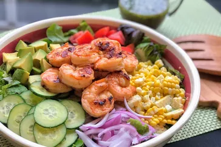

Summer Grilled Shrimp Salad

Description
This grilled shrimp salad featuring sweet and smoky grilled shrimp and a cilantro vinaigrette is a great main dish salad in the summertime. Serve with some crusty bread and a nice glass of wine!
Prep Time: 30 mins
Cook Time: 5 mins
Total Time: 35 mins
Servings: 2
Ingredients
- 1 tablespoon olive oil
- 2 ¼ teaspoons smokehouse maple seasoning (such as McCormick Grill Mates)
- 1 ½ teaspoons lemon juice
- 12 ounces peeled and deveined shrimp
Cilantro Vinaigrette:
- ¼ cup extra-virgin olive oil
- 2 tablespoons honey
- 2 tablespoons fresh lime juice
- 2 tablespoons chopped cilantro
- 1 tablespoon balsamic vinegar
- salt and ground black pepper to taste
Salad:
- 4 cups mixed salad greens, or more to taste
- ½ cup thinly sliced English cucumber
- ⅓ cup freshly cooked corn
- ½ cup diced tomato
- ¼ cup sliced red onion
- 1 avocado, diced